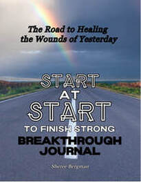

The Breakthrough Journal is more than a place to record your thoughts or write about your day. It is a guided tool designed to help you explore what lies beneath strong emotional reactions and recognize wounds that may still be influencing your life. Its purpose is to help you move beyond describing what happened and begin understanding why an experience affected you so deeply.
Sometimes a passing comment, a change in someone’s tone, a disagreement, or a feeling of being overlooked can bring up intense emotions. You may feel hurt, afraid, angry, rejected, or overwhelmed without fully understanding why. An experience in the present can touch a painful place from the past, stirring feelings connected to earlier rejection, emotional neglect, criticism, abandonment, or unmet needs.
The Breakthrough Journal provides a structured way to pause and explore those moments with curiosity and compassion. Through guided prompts and honest reflection, you can look more closely at what happened, what you felt, what you believed in that moment, and how you responded. Rather than judging yourself for having a strong reaction, you are encouraged to consider what that reaction may be revealing about your experiences and needs.
Over time, your entries may reveal recurring themes. You might notice that certain situations consistently leave you feeling unheard, that conflict brings up fear, or that criticism leads you to question your worth. Recognizing these patterns can help you understand responses you developed to protect yourself—and consider whether those responses still serve you today.
Faith is also part of this process. The journal offers space to bring your feelings, questions, and painful experiences before God in prayer. You can reflect on the beliefs you have carried, consider them in light of biblical truth, and invite God into the places where you need comfort, wisdom, and healing.
You do not need to have every answer, revisit every painful experience, or work through everything at once. You can move at your own pace, return to a question when you feel ready, and seek support when you need it. Each entry is an opportunity to listen more closely to your heart and approach your story with honesty and compassion.
The Breakthrough Journal is intended to be a practical companion on your emotional healing journey—helping you recognize patterns, getting to the root of your hurt, and practice more intentional ways of responding. The goal is more than filling pages. It is gaining understanding that can support healing, healthier relationships, and meaningful change.